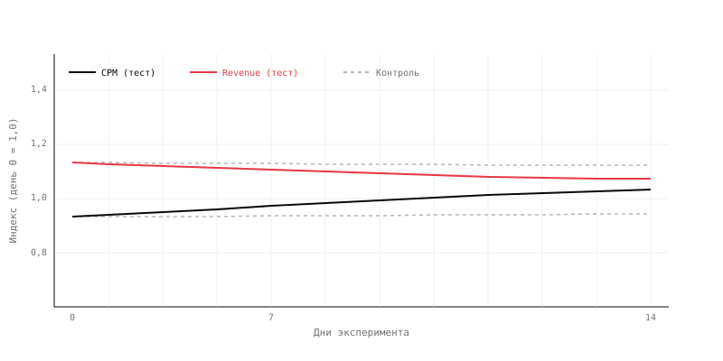
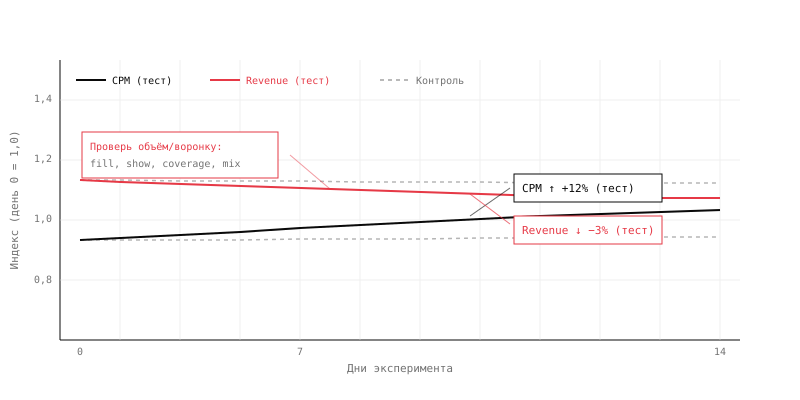

CPM растёт, а выручка падает
14 дней эксперимента. Тестовая группа показывает рост цены показа на 12% — и одновременно снижение выручки на 3%. Нужно разобраться, что произошло и что делать дальше.
Команда повысила минимальный floor (ценовой порог) на 15% в тестовой группе. Цель — поднять среднюю цену показа и выручку.
Эксперимент длился 14 дней. Трафик стабилен, сезонных эффектов нет. Контрольная группа без изменений.
По итогу: CPM в тестовой группе вырос на 12%. Выручка — упала на 3%.

- Как рост CPM на 12% совместим с падением выручки на 3%? Какую переменную вы не видите на графике?
- С какого момента начинается расхождение между CPM и выручкой — и что это говорит о механике эффекта?
- Какие дополнительные метрики нужно проверить, прежде чем принимать решение о раскатке?
Показать разбор
На графике видно, что CPM действительно вырос после повышения floor. Но выручка начала падать примерно с 5-го дня — и к концу эксперимента устойчиво ниже контроля.
Почему так бывает. Выручка — это не CPM, а CPM × объём монетизируемых показов. Повышение floor отсекает низкоценный инвентарь: показы с ценой ниже нового порога перестают проходить аукцион. CPM растёт, потому что остаются только дорогие показы. Но общий объём показов падает — и если падение объёма превышает рост цены, выручка снижается.
Где глаз обманывается. Рост CPM выглядит как успех. Именно поэтому аналитик должен смотреть не на одну метрику, а на произведение. В данном случае: +12% по цене не компенсируют потери объёма — итог −3% по деньгам.

Что нужно проверить. Четыре метрики объёма и воронки:
- Fill rate — доля запросов, получивших показ. Если упал — floor отрезает инвентарь.
- Show rate / coverage — доля доступного инвентаря, дошедшая до показа.
- Lost-to-constraints share — какой процент аукционов проигран из-за ценового порога.
- Inventory mix — изменился ли состав показов (сегменты, форматы, площадки).
Если fill rate упал, а lost-to-constraints вырос — floor слишком высокий и отрезает значительную часть инвентаря.
Неверный вывод: «CPM вырос на 12%, значит изменение работает. Выручка упала из-за внешних факторов. Катим в прод.»
Верный вывод: Повышение floor подняло CPM за счёт отсечения низкоценного инвентаря. Чистый эффект на выручку — −3%. Это значит, что потери объёма превысили выигрыш по цене. В прод не катить — нужно либо снизить floor, либо найти способ сохранить объём доступного инвентаря.
Чего нельзя утверждать: «Высокий floor всегда плох» — это зависит от структуры спроса. «Эффект проявится позже» — 14 дней достаточно для оценки флора. «Контрольная группа нестабильна» — без проверки её метрик это предположение, а не факт.
Механика, которая объясняет этот сценарий, разобрана в уроке 01. Цена и объём.